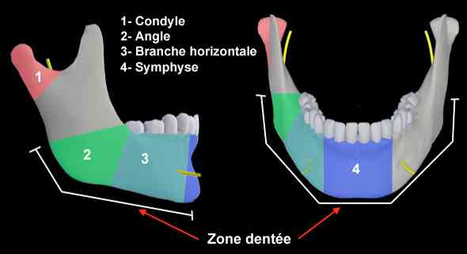
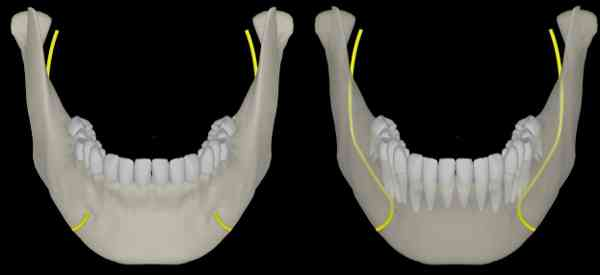
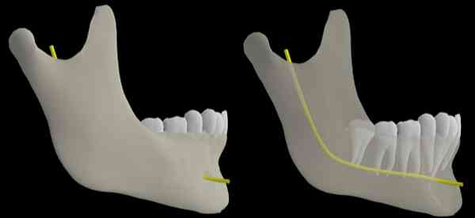
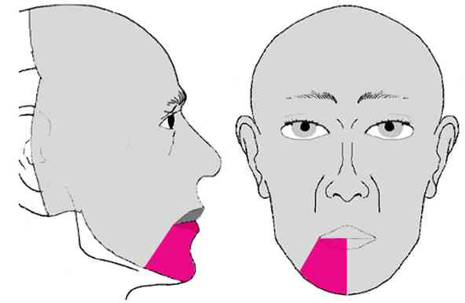
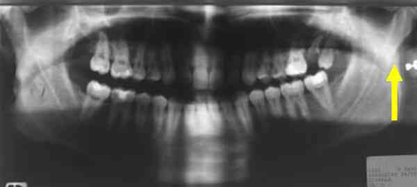
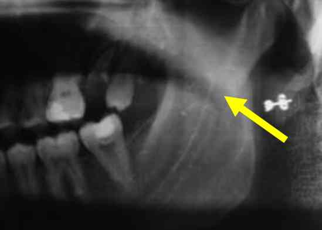
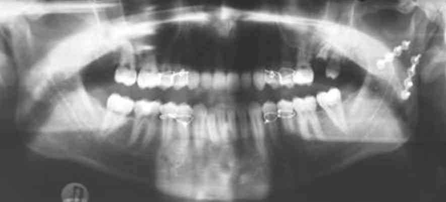
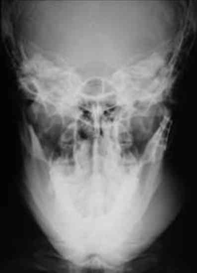
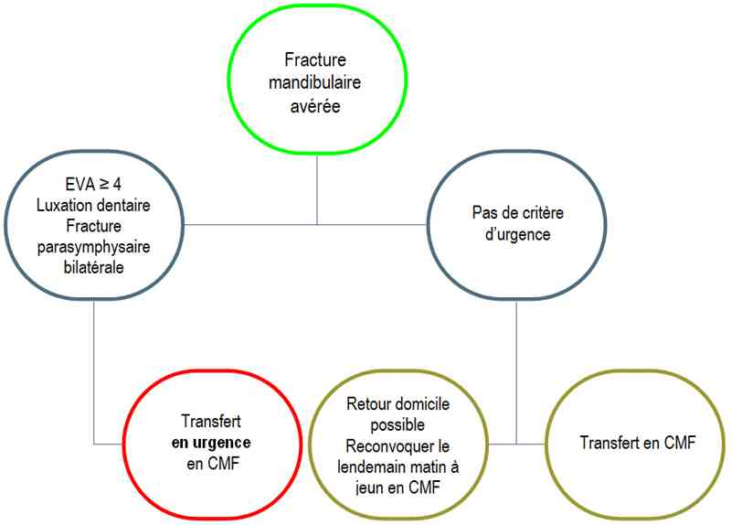

Bienvenue Sur Medical Education
Fractures : mandibulaires
Spécialité : pediatrie / traumatologie /
Points importants
-
Pathologie habituelle
-
Fractures bifocales très fréquentes (condyle + symphyse, branche horizontale + condyle)
-
En cas de traumatisme mentonnier : toujours rechercher lésion condylienne
-
1 cas à dépister en urgence : fracture parasymphysaire bilatérale : risque d'asphyxie par glossoptose
-
Traitement chirurgical quasi systématique à évaluer par un spécialiste
-
Anatomie mandibulaire
 _598 Anatomie mandibulaire
 _599 Mandibule de face : trajet du nerf alvéolaire inférieur
 _600 Mandibule de profil : trajet du nerf alvéolaire inférieur
-
En pratique, distinguer 2 zones :
-
portion dentée (= symphyse + branche horizontale + angle) :
- présence de gencive = fibro-muqueuse attachée, intimement adhérente à l'os
- toute fracture de cette zone entraîne une plaie de la fibro-muqueuse = fracture ouverte => mise sous antibiotiques mais pas d'indication à traitement chirurgical immédiat
- zone condylienne : correspond à la zone articulaire avec la base du crâne ; fracture fermée ; souvent méconnue ; risque d'ankylose temporo-mandibulaire si négligée
-
portion dentée (= symphyse + branche horizontale + angle) :
Présentation clinique / CIMU
SIGNES FONCTIONNELS
Spécifiques
- Limitation de l'ouverture buccale douloureuse (impotence fonctionnelle)
- Incompétence labiale (impossibilité de fermer les lèvres, dans les fractures très déplacées)
- Difficulté de déglutition (douleur)
CONTEXTE
Terrain
- Souvent adulte jeune
Circonstances de survenue
- Rixe +++
- AVP++ (contexte polylésionnel associé fréquent)
- Accident de sport
- Chute (personnes âgées)
EXAMEN CLINIQUE
- Eliminer d'autres lésions vitales avant prise en charge maxillo-faciale si contexte polylésionnel
-
Exobuccal :
- douleur au site lésionnel
- tuméfaction en regard de la fracture
- limitation de l'ouverture buccale antalgique
- recherche d'une hypoesthésie labio-mentonnière (par contusion du nerf alvéolaire inférieur)
- palper les articulations temporo-mandibulaires : 1 doigt juste en avant du tragus
 _601 Zone de recherche d'hypoesthésie labio-mentonnière
-
Endobuccal :
- modification de l'articulé dentaire +++ : « les dents ne se touchent plus comme avant »
- plaie gingivale au site fracturaire
- recherche de lésions dentaires +++ (intérêt médico-légal, noter dans le dossier)
EXAMENS PARACLINIQUES SIMPLES
- SpO2
- Hémoglobine capillaire (si polylésionnel)
CIMU
- Tri 3
Signes paracliniques
IMAGERIE
-
Panoramique + face basse bouche ouverte
 _665 Photo Fracture sous-condylienne gauche isolée : panoramique
 _666 Photo Fracture sous-condylienne gauche isolée : grossissement sur région condylienne gauche
- Si panoramique impossible : TDM mandibulaire avec coupes axiales fines + reconstructions coronales sur condyles
 _667 Photo Fracture sous-condylienne gauche isolée : panoramique postopératoire
 _668 Photo Fracture sous-condylienne gauche isolée : cliché face basse post-opératoire
Traitement
Chirurgical : ostéosynthèse ± blocage maxillo-mandibulaire
TRAITEMENT PREHOSPITALIER / INTRAHOSPITALIER
- Si détresse respiratoire : intubation oro-trachéale ou trachéotomie
- Sinon, laisser à jeun
MEDICAMENTS
Antalgiques
- Paracétamol IV 1 g x 4 /24h
- Morphine IV si EVA = 6 (selon protocole douleur)
Antibiotiques si fracture ouverte (portion dentée mandibulaire)
- Amoxicilline + acide clavulanique 1 g x 3/24h IV
- Si allergie à la pénicilline : clindamycine 600 mg x2/j + métronidazole 500 mg x3/j
Vérifier statut vaccinal
Surveillance
CLINIQUE
-
Douleur
Devenir / orientation
CRITERES D'ADMISSION
-
Au mieux le jour même vers un service de chirurgie maxillo-faciale pour traitement chirurgical
-
En urgence si :
-
douleur spontanée avec EVA ou EN = 4
-
luxation(s) dentaire(s) associée(s)
-
fracture symphysaire bilatérale (transport médicalisé)
CRITERES DE SORTIE
-
Si pas de critère de gravité
ORDONNANCE DE SORTIE
-
Ordonnance de 3 jours, le temps de consulter un spécialiste :
-
amoxicilline + acide clavulanique : 1g x 3/j
-
si allergie pénicilline : clindamycine 600 mg x2/j + métronidazole 500 mg x3/j
-
paracétamol + codéine (Efféralgan codéine®) : 2 cpx3g/j
-
bilan radiologique s'il n'a pas été réalisé aux urgences : panoramique + face basse
RECOMMANDATIONS DE SORTIE
-
Alimentation liquide
-
Consultation en urgence à jeun le lendemain en chirurgie maxillo-faciale
Algorithme
-
Algorithme : fracture mandibulaire avérée
Devenir / orientation
CRITERES D'ADMISSION
- Au mieux le jour même vers un service de chirurgie maxillo-faciale pour traitement chirurgical
-
En urgence si :
- douleur spontanée avec EVA ou EN = 4
- luxation(s) dentaire(s) associée(s)
- fracture symphysaire bilatérale (transport médicalisé)
CRITERES DE SORTIE
- Si pas de critère de gravité
ORDONNANCE DE SORTIE
-
Ordonnance de 3 jours, le temps de consulter un spécialiste :
- amoxicilline + acide clavulanique : 1g x 3/j
- si allergie pénicilline : clindamycine 600 mg x2/j + métronidazole 500 mg x3/j
- paracétamol + codéine (Efféralgan codéine®) : 2 cpx3g/j
- bilan radiologique s'il n'a pas été réalisé aux urgences : panoramique + face basse
RECOMMANDATIONS DE SORTIE
- Alimentation liquide
- Consultation en urgence à jeun le lendemain en chirurgie maxillo-faciale
Algorithme
-
Algorithme : fracture mandibulaire avérée
 _602 Algorithme Algorithme : fracture mandibulaire avérée
Bibliographie
-
Ogundare BO, Bonnick A, Bayley N Pattern of mandibular fractures in an urban major trauma center. J Oral Maxillofac Surg 2003 ; 61 : 713-718
-
Denhez F., Giraud O, J.-B. Seigneuric J.-B, Paranque AR., Fractures de la mandibule, Encyclopédie médico-chirurgicale, Stomatologie, [22-070-A-12] (2005)
Auteur(s) : Arnaud RIGOLET